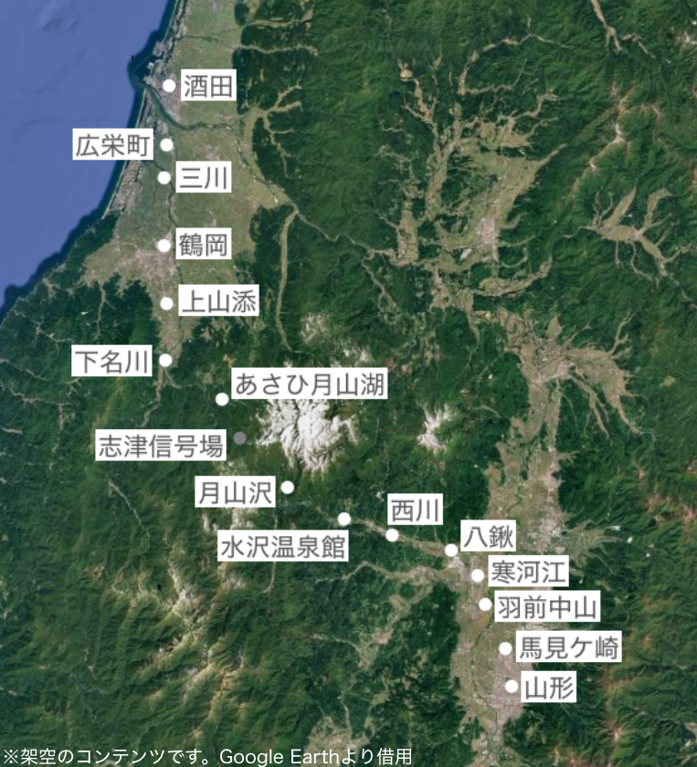

基本設定
羽前急行は、山形から鶴岡を経由し、酒田に至る高規格路線「月山線」を運営する鉄道会社です。
時は1985年、山形から酒田の短絡線として計画されましたが、途中で計画は破綻。そして羽前急行が路線を引き継ぎ1991年に全線開通。今でも運転を続けています。
社名は旧国名「羽前国」に由来、路線名は道のりにある山「月山」に由来します。
羽前急行では乗合バス事業も行っております。山形、酒田、鶴岡近辺での路線バス運行、東北~関東方面への高速バス・深夜バスの運行、さらに庄内空港への空港連絡バスも運行しています。
路線設定

羽前急行電鉄の路線図
直通路線の一覧です。
- 山形～仙台間 陸前鉄道仙台線
- 山形～仙台間 JNR仙山線
- 山形～秋田間 JNR羽越本線
- 山形～米沢～福島間 JNR奥羽本線
- 酒田～新潟間 JNR羽越本線
- その他、深夜快速解説欄で詳しく解説
現実との相違点
羽前急行の世界線では、一部現実と異なる設定があります。
- JRは民営化されていない。国鉄またはJNRの名を使用する。
- 陸鉄仙台線(陸前鉄道仙台線)は、山形と仙台を川崎町などを経由して運転される架空鉄道であるため、現実には存在しない。
- 白新線は存在せず、羽越本線が白新線のルートで新潟まで直接乗り入れている。
- 磐越西線、奥羽本線は全線で電化されている。